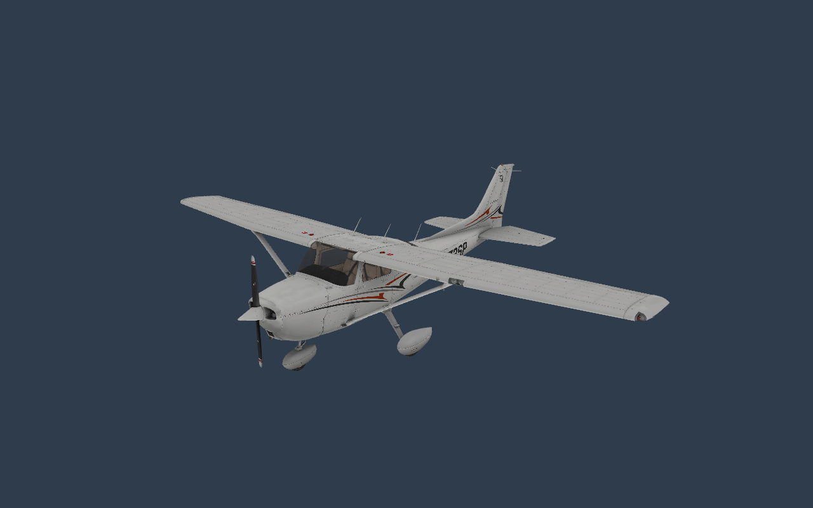
General aviation
Cessna 172 SP
Flight model + engine coupling. The primary test aircraft for Phase 1.
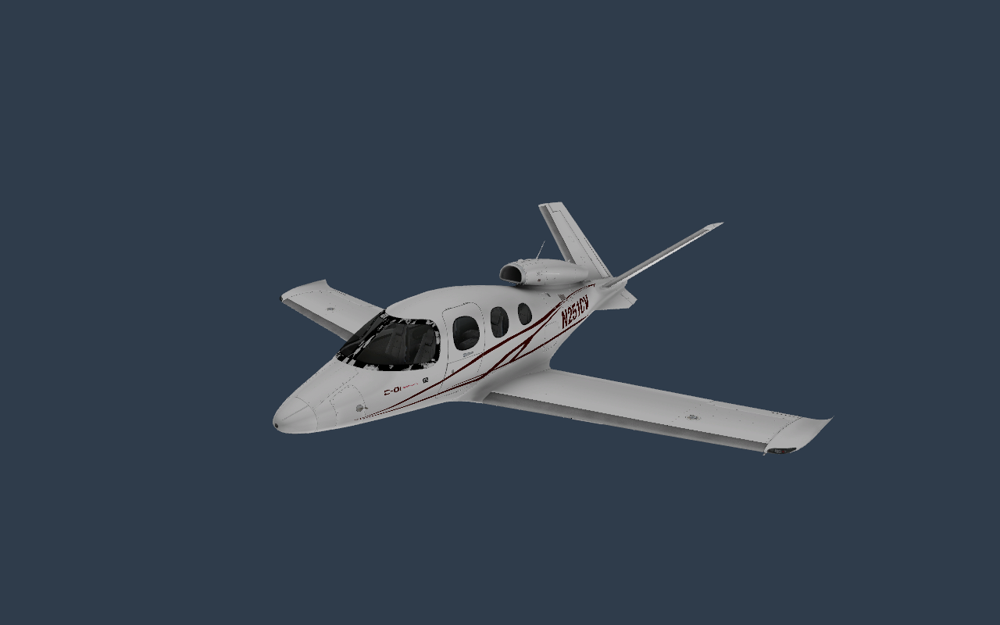
Open-source flight simulation engine
An independent engine in Rust that reads X-Plane 12 aircraft and scenery. Every step verified against the original.
Built in the open
An independent engine that loads the aircraft and scenery you already own from X-Plane 12.
Take the controls, inspect the research, and follow the work toward a complete simulator. Today's builds are experimental. Full compatibility is the destination.
Read the flight guideAircraft in focus

Flight model + engine coupling. The primary test aircraft for Phase 1.
Aircraft preview with geometry and textures. Systems incomplete.
Development gallery
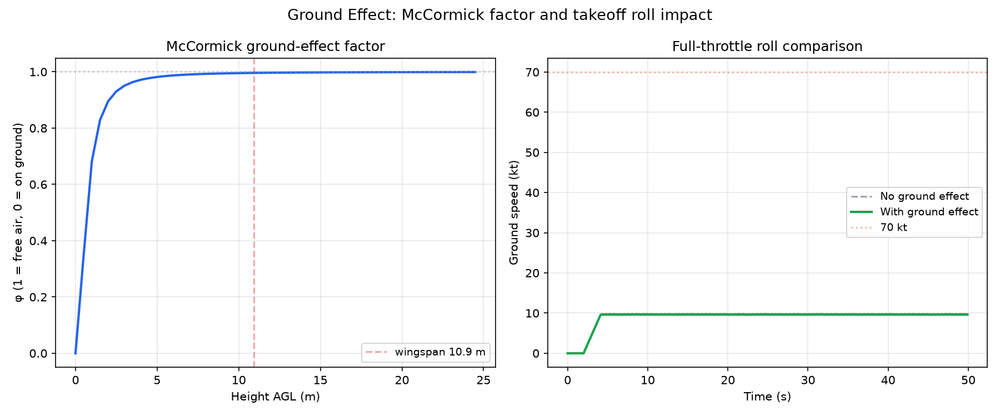
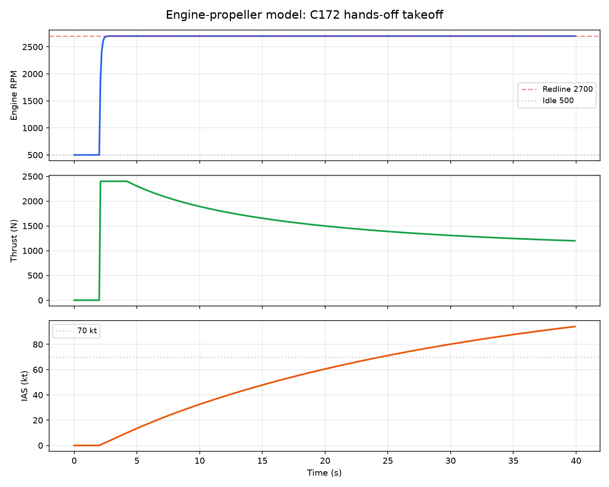
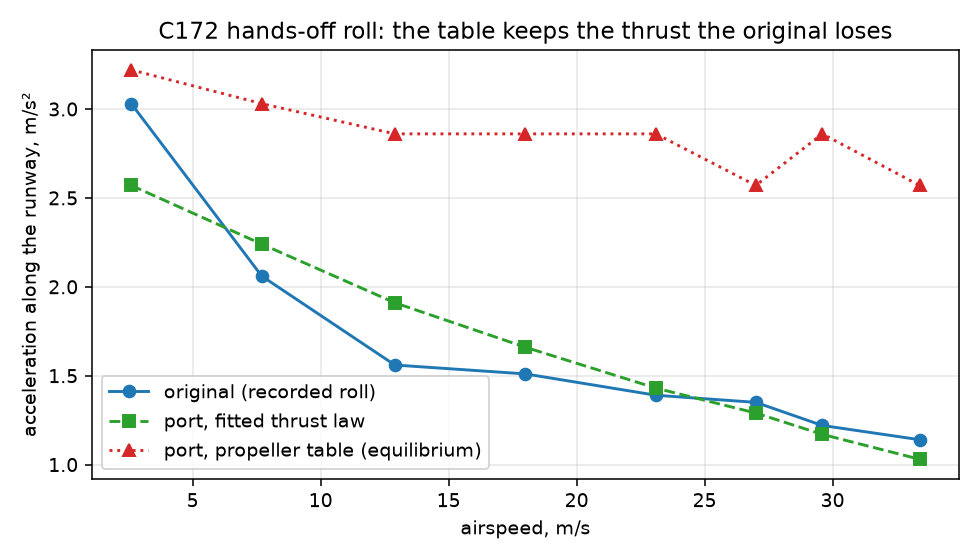
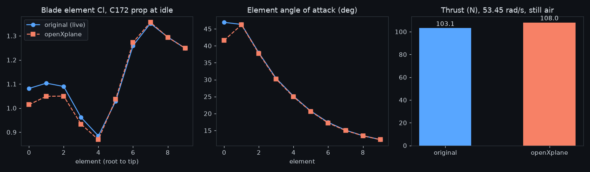
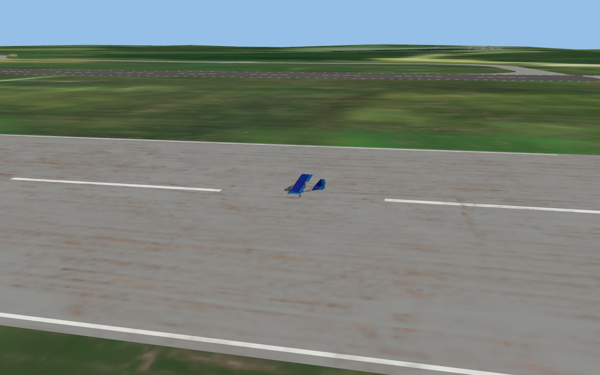
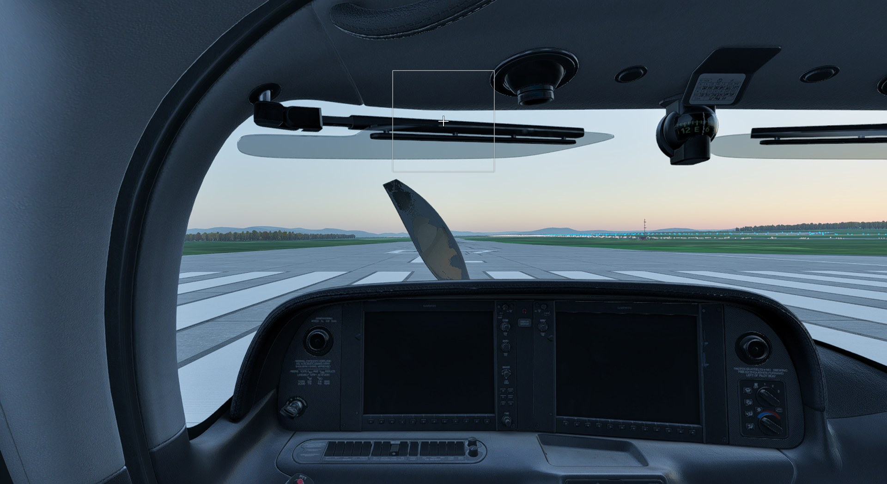
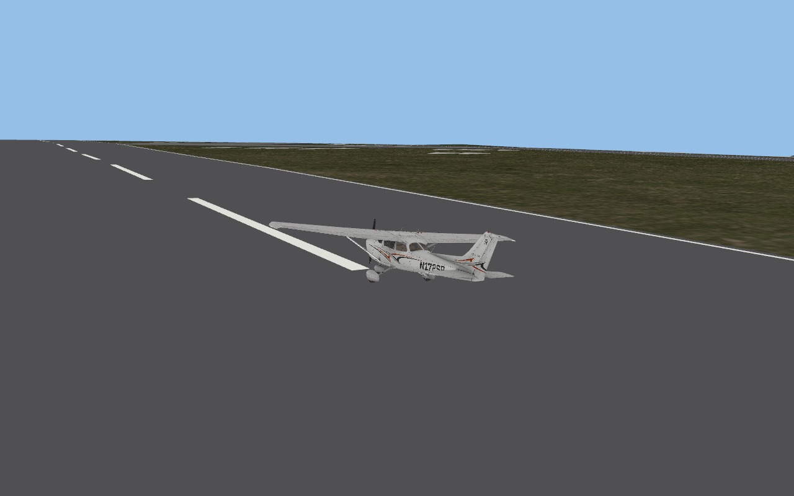
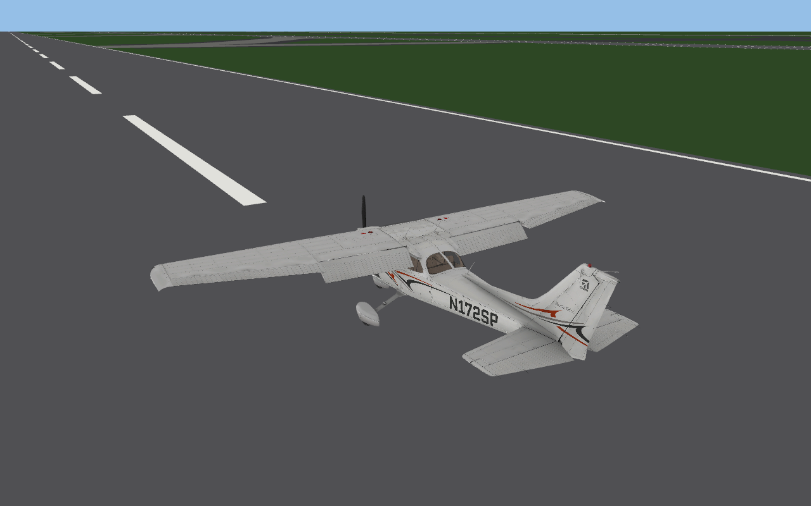
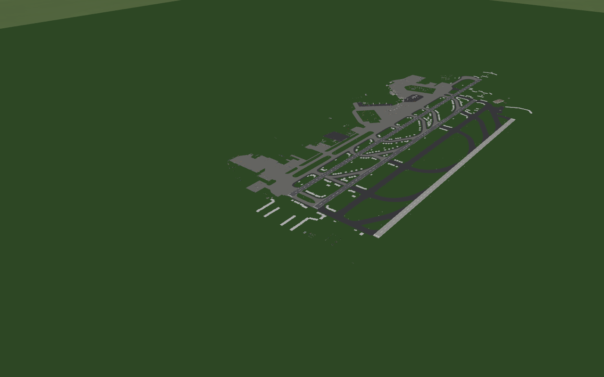
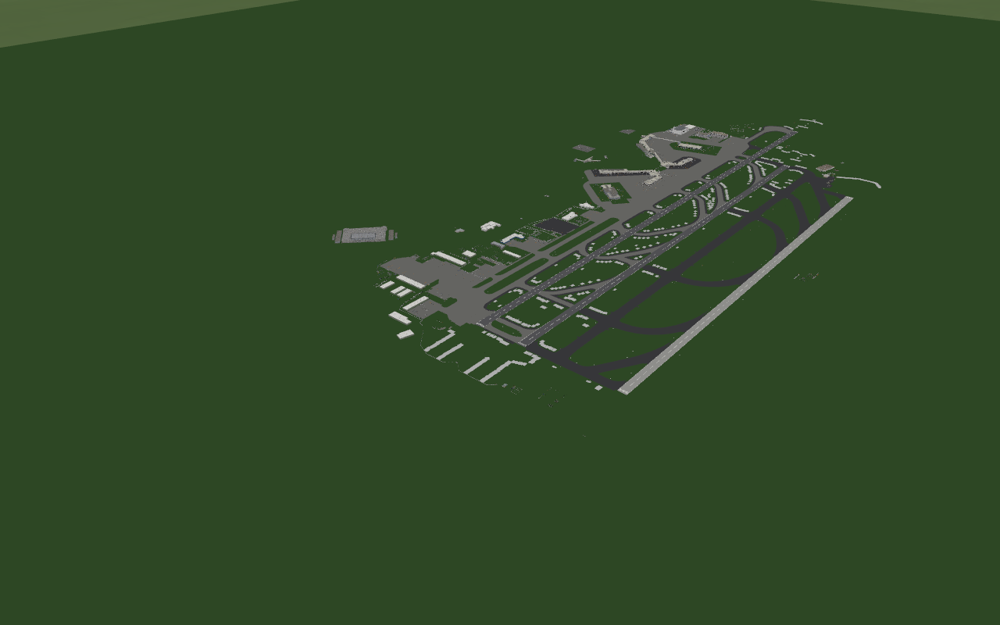
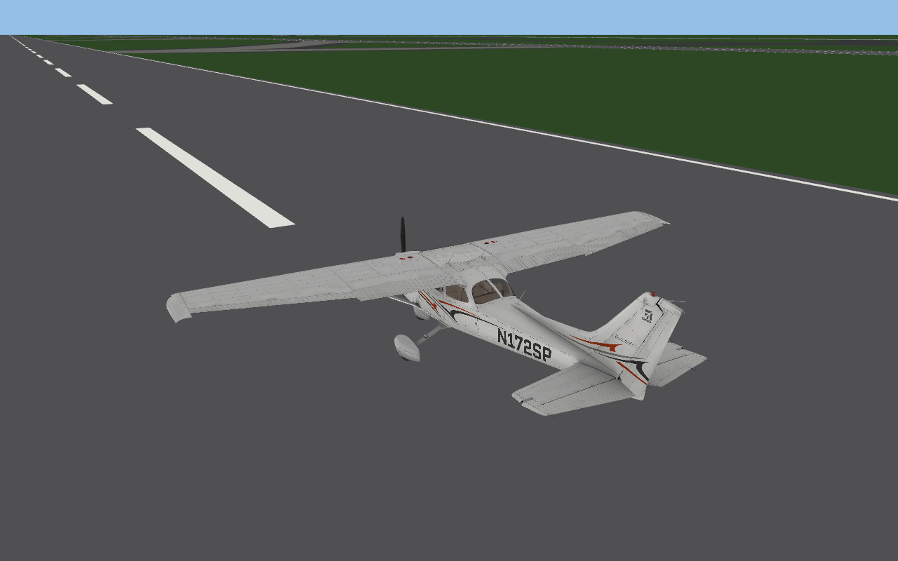
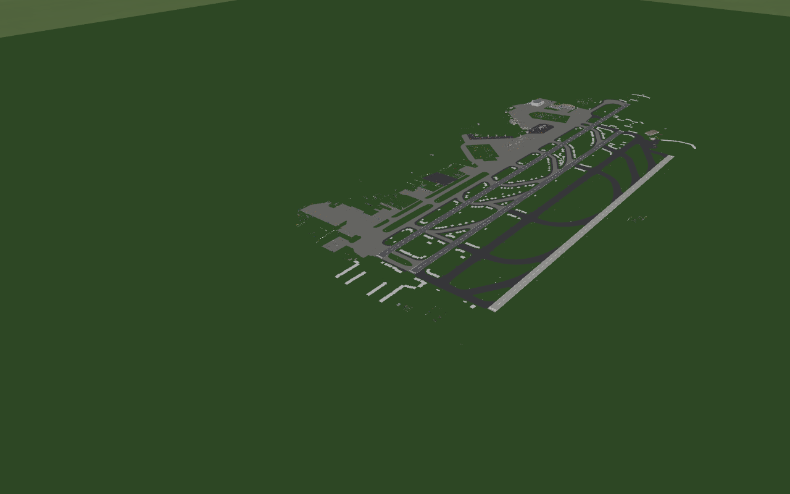
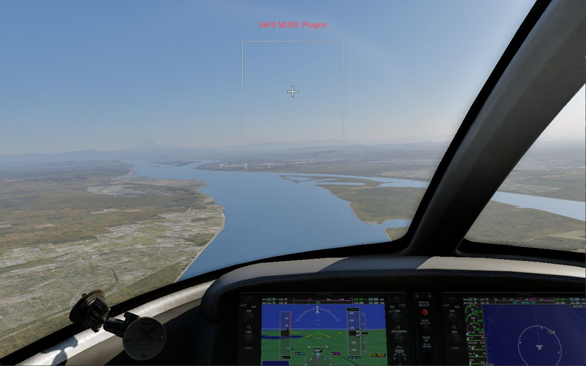
Engineering log
Every ported function is checked against the original binary. Research notes, vector comparisons and live captures document what works and what remains.
Wing elements, force aggregation, piston engine with mixture/ignition, propeller coupling, landing gear. Takeoff roll within 2 s of the original.
In progress54 of 2388 mapped datarefs answered. Engine rpm, power, flight path, controls, gauges. Command coverage growing.
Phase 2OBJ8 reader, DSF terrain, facades, autogen. PBR materials, animations driven by datarefs, night textures.
Phase 3Global scenery, library resolution, apt.dat runways and taxiways. UHWW and KSEA loaded from the install.
Phase 4Your next departure
Try the latest development build. Bring your installed copy of X-Plane 12 — openXplane includes no game content.
Windows x64 · macOS Apple Silicon · Linux x64 · Terminal builds